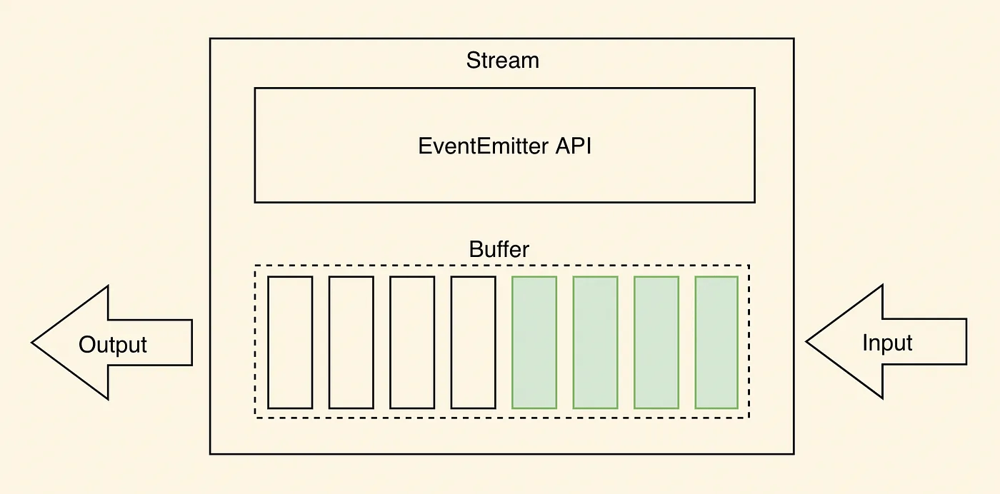

Node.js Stream(ストリーム)
Node.js の Stream は、ストリーミングデータを処理する抽象インターフェースであり、ファイル操作やネットワーク通信などのシーンで広く使用されています。
ストリーミングデータ処理の主な利点は、データ転送中にデータの処理を開始できることであり、すべてのデータが読み込まれるのを待つ必要がありません。これにより、Node.js は大量のデータを効率的に処理でき、過剰なメモリを消費しません。

Stream は抽象インターフェースであり、Node にはこのインターフェースを実装した多くのオブジェクトがあります。例えば、http サーバーにリクエストを送信する request オブジェクトは Stream であり、stdout（標準出力）も同様です。
Node.js の Stream（ストリーム）は、データフローを処理する方法であり、データを一度にすべてメモリに読み込むのではなく、ストリーム形式でデータを処理することができます。これは、大量のデータを処理したり、効率的なデータ転送を実現したりするのに非常に役立ちます。
Node.js の Stream には4つのストリームタイプがあります：
Readable- 読み取り可能な操作。
Writable- 書き込み可能な操作。
Duplex- 読み取りおよび書き込みが可能な操作。
Transform- 書き込まれたデータを操作し、その後結果を読み出す操作。
すべての Stream オブジェクトは EventEmitter のインスタンスです。一般的なイベントは次のとおりです：
data- 読み取り可能なデータがあるときにトリガーされます。
end- 読み取るデータがなくなったときにトリガーされます。
error- 受信および書き込み中にエラーが発生したときにトリガーされます。
finish- すべてのデータが基盤となるシステムに書き込まれたときにトリガーされます。
このチュートリアルでは、一般的なストリーム操作を紹介します。
ストリームからデータを読み取る
一般的な読み取り可能なストリームには、ファイル読み取りストリームやネットワークリクエスト応答ストリームが含まれます。
input.txt ファイルを作成し、内容は次のとおりです：
菜鸟教程官网地址：www.runoob.com
main.js ファイルを作成し、コードは次のとおりです：
例
var data = '';
// 読み取り可能なストリームを作成
var readerStream = fs.createReadStream('input.txt');
// エンコーディングを utf8 に設定します。
readerStream.setEncoding('UTF8');
// ストリームイベントを処理 --> data, end, error
readerStream.on('data', function(chunk) {
data += chunk;
});
readerStream.on('end',function(){
console.log(data);
});
readerStream.on('error', function(err){
console.log(err.stack);
});
console.log("プログラムの実行が完了しました");
上記のコードの実行結果は次のとおりです：
程序执行完毕 菜鸟教程官网地址：www.runoob.com
書き込みストリーム
書き込み可能なストリームは、データを宛先に書き込むために使用されます。一般的な書き込み可能なストリームには、ファイル書き込みストリームやネットワークリクエスト送信ストリームが含まれます。
main.js ファイルを作成し、コードは次のとおりです：
例
var data = '菜鸟教程公式サイトのアドレス：www.runoob.com';
// 書き込み可能なストリームを作成し、ファイル output.txt に書き込みます
var writerStream = fs.createWriteStream('output.txt');
// utf8 エンコーディングを使用してデータを書き込みます
writerStream.write(data,'UTF8');
// ファイルの末尾をマークします
writerStream.end();
// ストリームイベントを処理 --> finish、error
writerStream.on('finish', function() {
console.log("書き込みが完了しました。");
});
writerStream.on('error', function(err){
console.log(err.stack);
});
console.log("プログラムの実行が完了しました");
上記のプログラムは、data 変数のデータを output.txt ファイルに書き込みます。コードの実行結果は次のとおりです：
$ node main.js 程序执行完毕 写入完成。
output.txt ファイルの内容を確認します：
$ cat output.txt 菜鸟教程官网地址：www.runoob.com
双方向ストリーム（Duplex）
双方向ストリームは、読み取りと書き込みの両方の機能を同時に備えています。
典型的な双方向ストリームは TCP ソケットです。
例
// TCP サーバーを作成します
const server = net.createServer((socket) => {
console.log('Client connected.');
// クライアントデータを読み取ります
socket.on('data', (data) => {
console.log('Received data:', data.toString());
});
// クライアントにデータを送信します
socket.write('Hello, Client!\n');
// クローズイベントをリッスンします
socket.on('end', () => {
console.log('Client disconnected.');
});
});
server.listen(3000, () => {
console.log('Server listening on port 3000.');
});
変換ストリーム（Transform）
変換ストリームは特殊な双方向ストリームで、データを変更または変換できます。一般的な変換ストリームには、圧縮ストリームと解凍ストリームが含まれます。
例
const fs = require('fs');
// 読み取り可能なストリームを作成します
const readableStream = fs.createReadStream('example.txt');
// 変換ストリームを作成します（圧縮）
const gzip = zlib.createGzip();
// 書き込み可能なストリームを作成します
const writableStream = fs.createWriteStream('example.txt.gz');
// 読み取り可能なストリームを変換ストリームにパイプし、さらに書き込み可能なストリームにパイプします
readableStream.pipe(gzip).pipe(writableStream);
// 完了イベントをリッスンします
writableStream.on('finish', () => {
console.log('File compressed successfully.');
});
パイプストリーム
パイプは、出力ストリームから入力ストリームへのメカニズムを提供します。
通常は、あるストリームからデータを取得して、別のストリームにデータを渡すために使用されます。

上の図のように、ファイルを水を入れるバケツに例え、水はファイルの内容です。パイプで2つのバケツを接続し、水を一方のバケツからもう一方のバケツに流し込むことで、大きなファイルのコピープロセスを徐々に実現します。
以下の例では、ファイルの内容を読み取り、その内容を別のファイルに書き込みます。
input.txt ファイルの内容を次のように設定します：
菜鸟教程官网地址：www.runoob.com 管道流操作实例
main.js ファイルを作成し、コードは次のとおりです：
例
// 読み取り可能なストリームを作成します
var readerStream = fs.createReadStream('input.txt');
// 書き込み可能なストリームを作成します
var writerStream = fs.createWriteStream('output.txt');
// パイプによる読み書き操作
// input.txt ファイルの内容を読み取り、その内容を output.txt ファイルに書き込みます
readerStream.pipe(writerStream);
console.log("プログラムの実行が完了しました");
コードの実行結果は次のとおりです：
$ node main.js 程序执行完毕
output.txt ファイルの内容を確認します：
$ cat output.txt 菜鸟教程官网地址：www.runoob.com 管道流操作实例
チェーンストリーム
チェーンとは、出力ストリームを別のストリームに接続して、複数のストリーム操作チェーンを作成するメカニズムです。
チェーンストリームは通常、パイプ操作に使用されます。
次に、パイプとチェーンを使用してファイルを圧縮および解凍します。
compress.js ファイルを作成し、コードは次のとおりです：
例
var zlib = require('zlib');
// input.txt ファイルを input.txt.gz に圧縮します
fs.createReadStream('input.txt')
.pipe(zlib.createGzip())
.pipe(fs.createWriteStream('input.txt.gz'));
console.log("ファイルの圧縮が完了しました。");
コードの実行結果は次のとおりです：
$ node compress.js 文件压缩完成。
上記の操作を実行すると、現在のディレクトリに input.txt の圧縮ファイル input.txt.gz が生成されたことを確認できます。
次に、このファイルを解凍しましょう。decompress.js ファイルを作成し、コードは次のとおりです：
例
var zlib = require('zlib');
// input.txt.gz ファイルを input.txt に解凍します
fs.createReadStream('input.txt.gz')
.pipe(zlib.createGunzip())
.pipe(fs.createWriteStream('input.txt'));
console.log("ファイルの解凍が完了しました。");
コードの実行結果は次のとおりです：
$ node decompress.js 文件解压完成。
一時停止と再開
読み取り可能なストリームは、データの読み取りを一時停止および再開できます。
例
const readableStream = fs.createReadStream('example.txt', 'utf8');
readableStream.on('data', (chunk) => {
console.log('Received chunk:', chunk);
readableStream.pause(); // 読み取りを一時停止します
setTimeout(() => {
readableStream.resume(); // 読み取りを再開します
}, 1000);
});
破棄
ストリームを破棄して、リソースを解放できます。
例
const readableStream = fs.createReadStream('example.txt', 'utf8');
readableStream.on('data', (chunk) => {
console.log('Received chunk:', chunk);
readableStream.destroy(); // ストリームを破棄します
});
房明
121***5022@qq.com
で、今こんな要件があります。input の中身を outInput に書き込みたいのですが、上記の方法はどれもドキュメントの中身をリセットしてしまいます。追加したいだけで、元の内容を保持したい場合はどうすればよいでしょうか。読み取り可能なストリームの作成完了時のコールバック関数内で操作できます。コードを見てください：
let fs = require('fs'); let data = ''; let data2 = '你的小青蛙是真的可爱'; //1.读取流 //创建可读流 let readStream = fs.createReadStream("input.txt"); //设置utf-8编码 readStream.setEncoding('UTF8'); //处理流事件 readStream.on('data', chunk => data += chunk); readStream.on('end', () => writeS(data)); readStream.on("error", err => console.log(err.strck)); console.log("程序1执行完毕"); //2.写入流 //创建可写流 let writeS = dataS =>{ let writeStream = fs.createWriteStream("outInput.txt"); //使用utf-8写入流 writeStream.write(data2+dataS, "UTF8"); //标记文件末尾 writeStream.end(); //处理事件流 writeStream.on("finish", () => console.log("写入完成")); writeStream.on("error", err => console.log(err.stack)); console.log("程序2执行完毕"); }これで大丈夫です。
房明
121***5022@qq.com
彤哥哥
lty***in@gmail.com
上記のように上書き状態になる可能性がある場合は、書き込みストリームの追記パラメータを設定することで解決できます：
var fs = require('fs'); var read = fs.createReadStream('../data/input.txt'); //设置第二个参数append var write = fs.createWriteStream('../data/out.txt', { 'flags': 'a' }); //管道流读写操作 read.pipe(write); console.log('执行完毕');彤哥哥
lty***in@gmail.com
共有
294***2136@qq.com
最初のチュートリアルに従って input.txt を読み取ると、中国語の文字化けが発生します。以下のように設定しても：
// 设置编码为 utf8。 readerStream.setEncoding('UTF8');それでも無駄でした。私のコードは上記の最初の読み取りストリームのチュートリアルとまったく同じで、input.txt の中身もまったく同じですが、それでも文字化けします。
解決策：
iconv-lite モジュールをグローバルにインストールします：
コードでの記述は次のとおりです：
var iconv = require('iconv-lite'); var fs = require('fs'); var fileStr = fs.readFileSync('D:\\test.csv', {encoding:'binary'}); var buf = new Buffer(fileStr, 'binary'); var str = iconv.decode(buf, 'GBK'); console.log(str);原理は、まずバイナリエンコーディング方式で読み取り、その後 GBK でデコードするというものです。
共有
294***2136@qq.com
夏楠
414***997@qq.com
私は1番目のコメントのような乱雑な書き方には賛成しません。私はpromiseを使用して2つのファイルのリクエストデータを並行して取得し、その後2つのファイルの内容を別のファイルに書き直しました。ご参考までに。
//引入fs模块 var fs = require("fs") //封装请求文件数据的函数 function getFileData(fileName){ return new Promise(resolve=>{ var readStream = fs.createReadStream(fileName) readStream.setEncoding('UTF8') readStream.on("data",chunk=>resolve(chunk)) }) } //并发请求 Promise.all([getFileData("input.txt"),getFileData("output.txt")]).then(result=>{ var writeStream = fs.createWriteStream("output.txt"); //讲两个文件的内容重新再写入到output.txt中 writeStream.write(result[0]+","+result[1],"UTF8"); writeStream.end(); //再获取output.txt文件的内容 fs.readFile("output.txt",(err,content)=>console.log(content.toString())) })夏楠
414***997@qq.com
良木
341***8308@qq.com
1番目のコメントの意味は、一度の追記操作です。fsパッケージはappendFileという関数を提供しており、追記操作を解決できます。
個人検索で得たファイル追記操作：
writeFile関数でもファイルに書き込むことはできますが、ファイルが既に存在し、単に一部の内容を追加したい場合には、そのニーズを満たすことができません。幸いなことに、fsモジュールにはappendFile関数があり、新しい内容を既存のファイルに追記することができます。ファイルが存在しない場合は、新しいファイルが作成されます。使用方法は以下の通りです：
例：fs.appendFile(ファイル名, データ, エンコーディング, コールバック関数(err));
var fs= require("fs"); fs.appendFile('test.txt', 'data to append', function (err) { if (err) throw err; //数据被添加到文件的尾部 console.log('The "data to append" was appended to file!'); });エンコード形式はデフォルトで「utf8」です。
良木
341***8308@qq.com